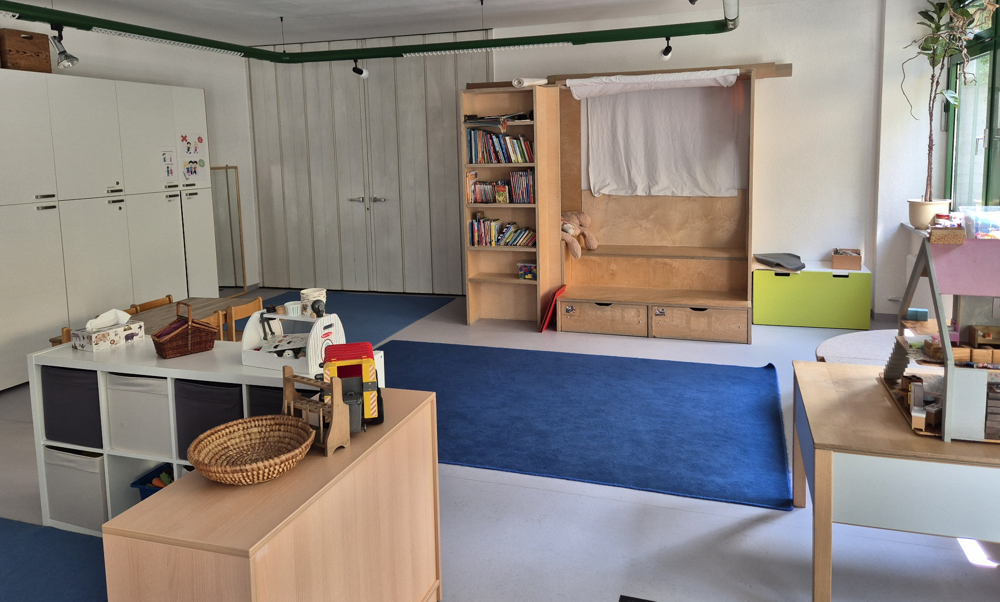

Der Verein

Die EKI Maxhofkinder e.V. ist eine altersgemischte Einrichtung von bis zu 40 Kindern. Die beiden Gruppen stellen sich üblicherweise wie folgt zusammen:
Bis zu drei Krippenkinder (2 bis 3 Jahre), 20 Kindergartenkinder (3 bis 6 Jahre) und 15 Hortkinder (1. Bis 4. Klasse aus der Königswieser Grundschule)
Außerdem bieten wir zwei Einzelintegrationsplätze für Kinder mit Behinderung oder von Behinderung bedrohte Kinder nach §§ 53, 54 SGB XII an. Eine enge Zusammenarbeit mit dem heilpädagogischen Fachdienst ist dabei eine Selbstverständlichkeit.
Das Team
Vorstand
Der Vorstand handelt stets im Auftrag des Vereins, muss dessen Ziele verfolgen und auf die Einhaltung der gesetzlichen Vorgaben achten. Er fungiert als Träger, Vereinsvertretung und Arbeitgeber.
In der Regel wird er aus drei Mitgliedern der Mitgliederversammlung gestellt und gewählt. Sie dürfen sich auch mehrere Jahre in Folge aufstellen lassen. Die Eltern können sich mit ihren Anliegen, Fragen und Problemen jederzeit an den Vorstand wenden, persönlich, telefonisch oder per E-mail. Auch zwischen Eltern und Team vermittelt, wenn nötig, der Vorstand.
Kontakt
Maxhofkinder e. V.
Königswieser Str. 12 • 81475 München
Telefon: 089 - 7594647
Fax: 089 - 74442218
E-Mail: Kontakt@maxhofkinder.de
Haben Sie Fragen oder Interesse an unserer Einrichtung?